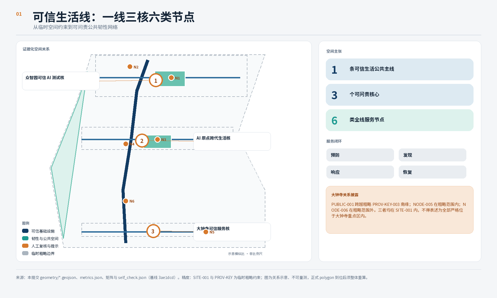
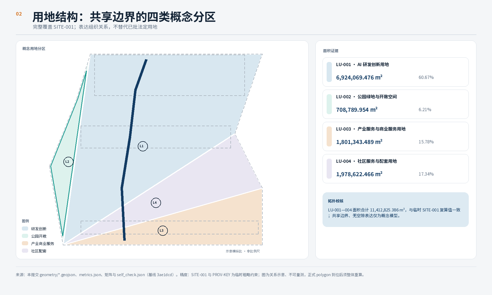
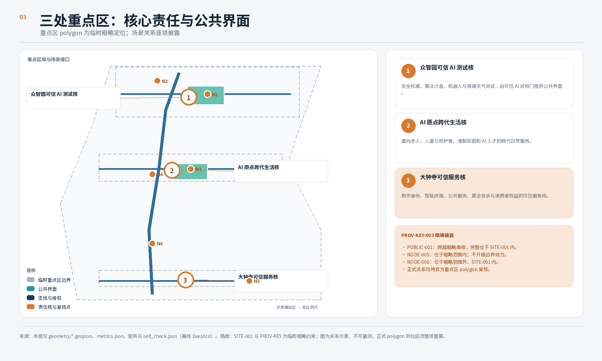
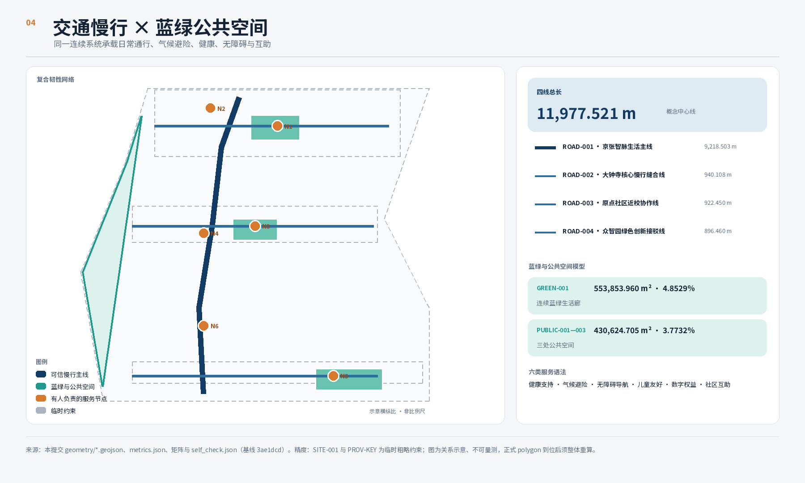
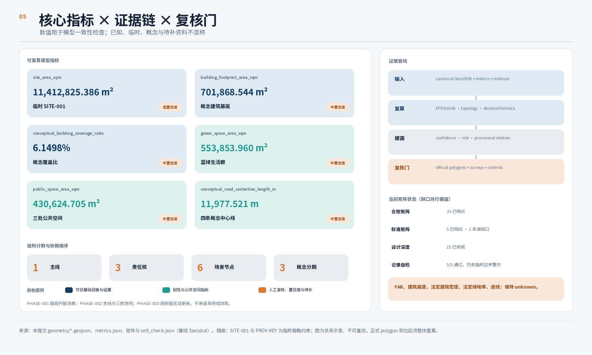

01
众智园可信 AI 测试核
受控测试 · 人工停机 · 公开规则
一条连续的公共生活线，把日常韧性、三处责任核与六类可治理服务节点连成可回退的人工责任回路。
受控测试 · 人工停机 · 公开规则
老人、儿童、家庭与 AI 人才共享日常服务
数字权益 · 消费者权益 · 人工申诉
沿京张遗址公园组织慢行、避险、健康、无障碍与互助服务；概念线位约 11.978 km，不代表道路红线或工程方案。
受控测试 · 人工停机 · 公开规则
老人、儿童、家庭与 AI 人才共享日常服务
数字权益 · 消费者权益 · 人工申诉
容积率、建筑高度、法定建筑密度、法定绿地率和退线均保持未知；不得由概念图形反推。
低置信度 · EPSG:4548
不是法定建筑密度
不是法定绿地率
由公共空间图层复算
一线 + 三条连接线
一线 / 三核 / 六类节点
大钟寺当前是方向性关联：NODE-005 在粗略重点区内，PUBLIC-001 跨其南缘，NODE-006 在矩形外但在 SITE-001 内。官方 polygon 到位后整体校核或重定位。
把安全标准、算法沙盒、机器人与极端天气测试纳入有边界、有日志、有人工责任的载体。
可信 AI 试验门 · PROV-KEY-001用短路径与共享时段连接照护、儿童、家庭、人才生活支持和社区学习。
跨代生活客厅 · PROV-KEY-002在轨道可达界面解释数字身份、智能终端、投诉纠正与消费者权益。
算法透明广场 · PROV-KEY-003来源均以 sources.json 的登记信息和访问日期为准；机构案例只用于机制比较，不复制媒体、标识或宣传性绩效结论。





全部场景执行预防 - 发现 - 响应 - 恢复；采用目的限定、数据最小化、授权、撤回、日志、人工复核和申诉。
可坐、可读、可求助；不依赖手机
连续视线、低冲突过街、数据保护
轨道、学校、照护间的安全连续路径
透明试验规则与日常生活支持
双语、离线信息与人工翻译回退
明确权限、交接、停机与申诉责任
人工确认后开放；数字失效时固定指引
居民与访客 · 主线、绿廊、避险点不确定时不自动导航；人工陪同
轮椅使用者等 · 主线、连接线、服务台冲突时转入有工作人员的安全点
儿童与照护者 · 学校联系、过街、客厅非诊断；由人工急救和转介接管
老人和慢病人群 · 健康节点、休息点自愿登记；工作人员核实请求
家庭、独居者 · 互助节点、服务台预约隔离、日志、人工停机
测试参与者 · 试验门受控区只证明必要属性；保留实体凭证
服务使用者 · 可信服务核暂停争议结果；人工复核和申诉
受影响公众 · 透明广场、人工台席停止测试；保留现金和普通终端
消费者与商户 · 预约测试节点固定安全路线、巡查和陪同
晚归家庭与访客 · 照明、值守界面低置信翻译转人工与标准符号
国际访客 · 三核服务台、离线点真实风险立即停止并切换应急程序
全体用户与运营者 · 一线、三核、六类节点大钟寺当前是方向性关联：NODE-005 在粗略重点区内，PUBLIC-001 跨其南缘，NODE-006 在矩形外但在 SITE-001 内。官方 polygon 到位后整体校核或重定位。
让质询、测试、人工判断和修复的顺序可见；不是认证中心。
在共享日常服务中保留个人故事、健康和儿童信息的私密边界。
把服务解释、最少披露身份、投诉与消费者权益放在公共界面。
全部场景执行预防 - 发现 - 响应 - 恢复；采用目的限定、数据最小化、授权、撤回、日志、人工复核和申诉。
维护六类节点与非数字路径
受控产业验证与全线回退抽测
汇总使用、投诉、退出、修复与无障碍
公开复盘、专业交流与韧性演练
先研究南段开放场景、慢行安全与大钟寺公共界面
协调生活线、三核、服务与可逆设施
研究西部低扰动更新、社区服务缺口与长期治理
当前矩阵：17 项 addressed
当前矩阵：6 项 addressed
15 项 complete；资料缺口另行披露
5 项 addressed；1 项来源缺口
来源均以 sources.json 的登记信息和访问日期为准；机构案例只用于机制比较，不复制媒体、标识或宣传性绩效结论。
A-BOUNDARY-001SITE-001 与三处重点区均为临时坐标，不是官方边界。A-CONTROLS-001控规、红线、权属、市政、消防、文保与工程条件缺失。A-MOBILITY-001一线和连接线是概念慢行线位，不主张现状路权。A-PRIVACY-001不得默认人脸识别、个体跟踪或可识别移动历史。A-RECALC-001官方 polygon 到位后全部在 EPSG:4548 重算并复核拓扑。OFFICIAL-ANNOUNCEMENT百年京张AI创新带城市设计国际方案征集资格预审公告AGENT-TASKBOOK经清权的 Agent 任务书，用于任务对齐而非官方空间结论MOHURD-URBAN-DESIGN-MEASURES住房城乡建设部城市设计管理办法MOHURD-CONTROL-DETAILED-PLANNING住房城乡建设部控制性详细规划编制审批办法MNR-LAND-USE-CLASSIFICATION-GUIDE自然资源部国土空间调查、规划、用途管制用地分类指南CASE-STUDIESVector, Mila, AI Singapore, Cyber Valley, ETH AI Center, Hub71+ AI 官方资料BOUNDARY_TRUST临时边界已披露，可用于内容评分；不得作为官方红线、精确面积或法定控制、权属、审批或工程结论依据KEY_AREAS_TRUST三处重点区均为已披露临时几何；内容评分仍可进行，但不得作为官方重点区 polygon、精确面积或法定控制、权属、审批或工程结论依据LAND_USE_TOPOLOGY四个共享边界分区覆盖 SITE-001VISUAL_STATIC静态 HTML 无外部依赖PROFESSIONAL_EVIDENCE正文连接标准、深度、geometry、指标、来源与假设